4. týden: Kinetické struktury Week 4: Kinetic Structures
Během čtvrtého týdne bylo úkolem navrhnout a s využitím 3D tisku a/nebo laserového vyřezávání vyrobit kinetickou strukturu.
During the fourth week, the task was to design and manufacture a kinetic structure using 3D printing and/or laser cutting.
Tvorba planetové převodovky Creating a planetary gearbox
Protože jsem si chtěl vyzkoušet návrh mechanismů s ozubenými koly, rozhodl jsem se tento týden postavit planetovou převodovku. Because I wanted to try designing mechanisms with gears, I decided to build a planetary gearbox this week.
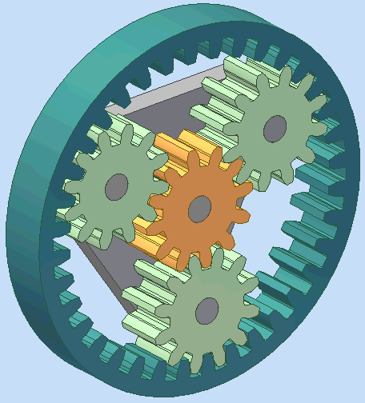
Pro správné fungování převodovky musí mezi počtem zubů a rozměry centrálního, korunového a planetových kol platit jisté matematické vztahy. K výpočtu těchto parametrů jsem použil nástroj Gear Generator 2 beta. Modul zubů (jejich velikost) jsem zvolil tak, aby se kola dobře tiskla a mechanismus nebyl zbytečně rozměrný. Výsledný převod je 1:5. For the gearbox to function correctly, certain mathematical relationships must apply between the number of teeth and the dimensions of the sun, ring, and planetary gears. To calculate these parameters, I used the Gear Generator 2 beta tool. I chose the gear module (their size) so that the gears print well and the mechanism is not unnecessarily bulky. The resulting gear ratio is 1:5.
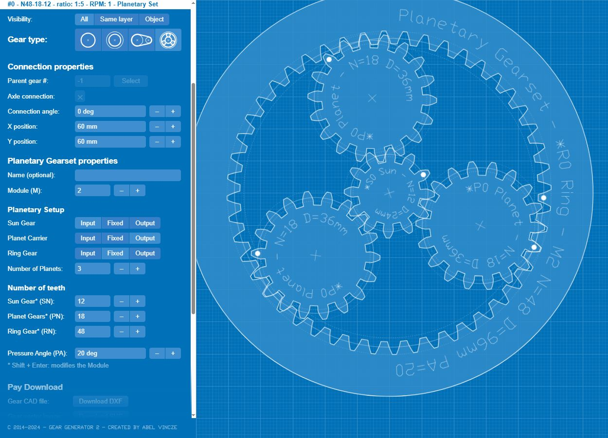
3D model jsem vytvořil v programu Fusion 360 s využitím doplňku Spur Gear (UTILITIES -> ADD-INS -> Scripts and Add-ins -> Spur Gear). Ten po aktivaci přidává do menu SOLID -> CREATE generátor ozubených kol. Pro každé kolo jsem pak založil samostatný náčrt (sketch) a pomocí funkce Project jsem do něj přenesl obrys kola. I created the 3D model in Fusion 360 using the Spur Gear add-in (UTILITIES -> ADD-INS -> Scripts and Add-ins -> Spur Gear). After activation, this adds a gear generator to the SOLID -> CREATE menu. I then created a separate sketch for each gear and used the Project function to transfer the gear's outline into it.
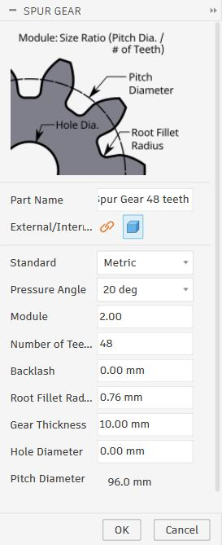
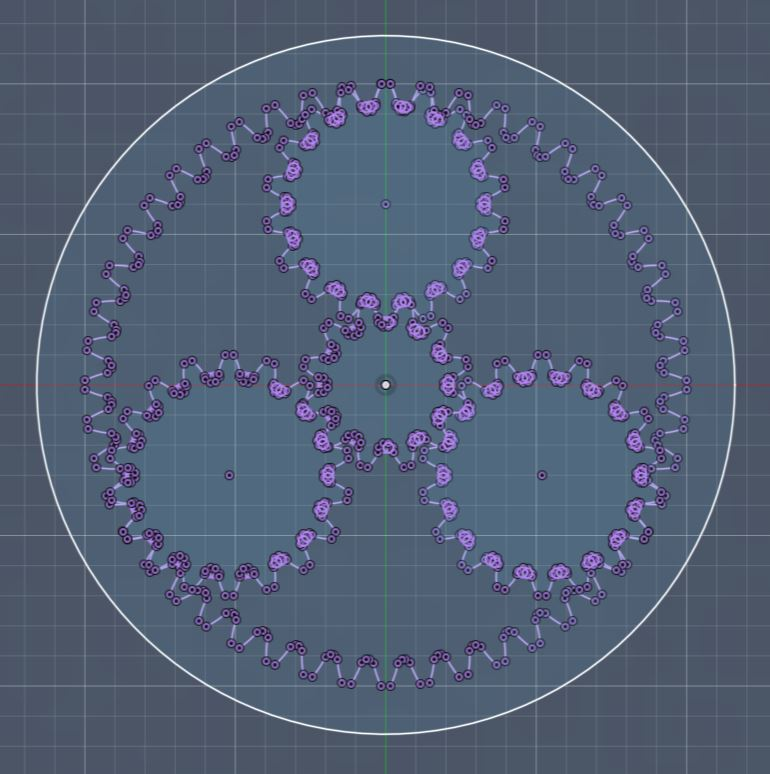
Hladký chod mechanismu zajišťuje celkem pět ložisek. Tři z nich umožňují plynulou rotaci planetových kol na unašeči. Zbylá dvě jsou uložena ve vrchní a spodní polovině unášeče, což zaručuje hladký pohyb mezi ním a hřídelí centrálního kola. Horní a spodní část unášeče drží pohromadě tři šrouby M3 × 8. Stejný typ šroubů jsem použil pro připevnění páky k centrálnímu kolu. Centrální hřídel spojuje šroub M3 × 18 a korunové kolo šrouby M3 × 4. Pro všechny tyto M3 šrouby jsem použil otvory o průměru 3 mm. The smooth operation of the mechanism is ensured by a total of five bearings. Three of them allow for the smooth rotation of the planetary gears on the carrier. The remaining two are placed in the upper and lower halves of the carrier, which guarantees smooth movement between it and the sun gear shaft. The upper and lower parts of the carrier are held together by three M3 × 8 screws. I used the same type of screws to attach the lever to the sun gear. The central shaft is connected by an M3 × 18 screw and the ring gear by M3 × 4 screws. For all these M3 screws, I used holes with a diameter of 3 mm.
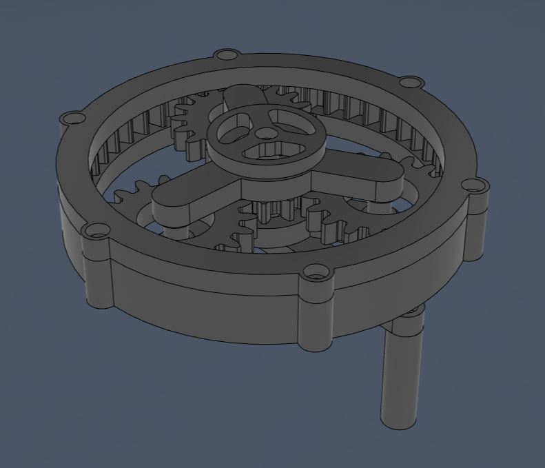
Aby se ozubená kola nezasekávala, bylo nutné přidat vůli (backlash). Protože jsem však měl od původních kol již odvozenou další geometrii, nemohl jsem kola jednoduše smazat a nechat vygenerovat nová s nastaveným backlashem. Takový postup by vedl k rozpadu vazeb v celém modelu, proto bylo nutné upravit stávající kola. To prevent the gears from jamming, it was necessary to add backlash. However, since I already had other geometry derived from the original gears, I couldn't simply delete the gears and generate new ones with the set backlash. Such a procedure would lead to the collapse of constraints in the entire model, so it was necessary to modify the existing gears.
Generátor Spur Gear funguje tak, že vytvoří kružnici, na ní jeden zub a ten následně pomocí funkce Circular Pattern zkopíruje po obvodu. Pokusil jsem se v časové ose vrátit před toto kopírování a zub zmenšit pomocí nástroje Offset Face. Fusion 360 však poté při návratu v čase vpřed hlásil chybu. The Spur Gear generator works by creating a circle, placing one tooth on it, and then copying it around the perimeter using the Circular Pattern function. I tried to go back in the timeline before this copying and shrink the tooth using the Offset Face tool. However, Fusion 360 then reported an error when returning forward in time.
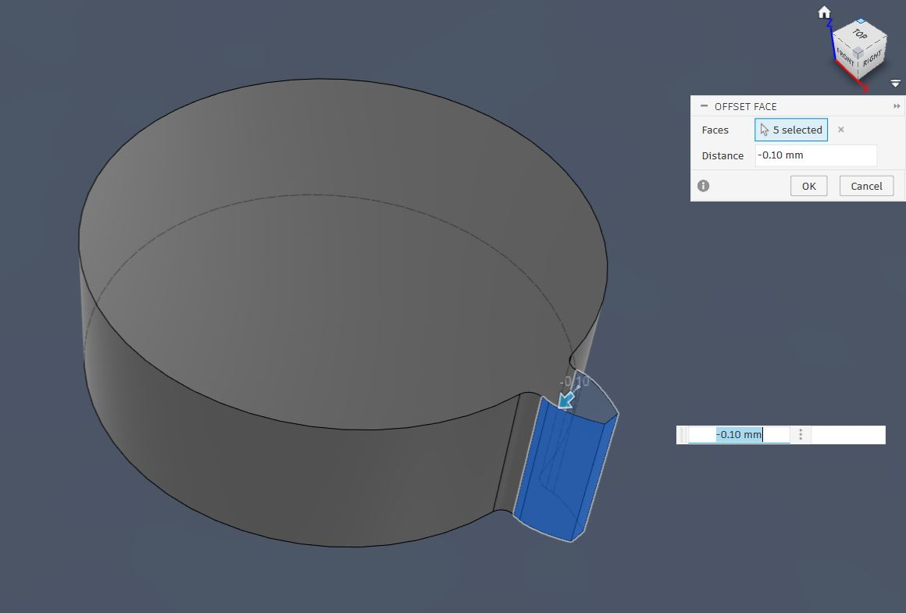
Musel jsem tedy zvolit hrubou sílu: manuálně jsem označil všechny zuby a zmenšil je pomocí Offset Face hromadně. Po dvou zkušebních výtiscích se jako ideální hodnota offsetu ukázalo 0,3 mm. So I had to resort to brute force: I manually selected all the teeth and shrunk them in bulk using Offset Face. After two test prints, 0.3 mm turned out to be the ideal offset value.
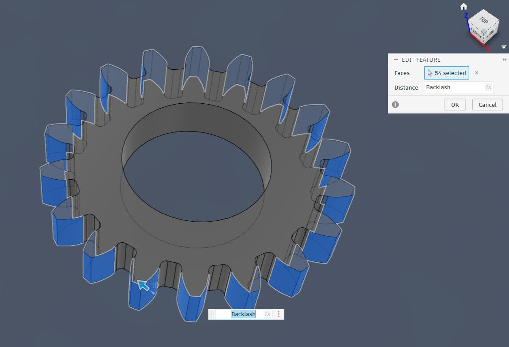
Hotové modely jsem vyexportoval z Fusionu (Utilities -> 3D print) do formátu 3MF a naslicoval v programu Bambu Studio. Jako materiál jsem vybral PLA a tiskl jsem na tiskárně Bambu Lab A1 Mini s 0,4 mm tryskou při následujícím nastavení: I exported the finished models from Fusion (Utilities -> 3D print) into the 3MF format and sliced them in the Bambu Studio program. I chose PLA as the material and printed on the Bambu Lab A1 Mini printer with a 0.4 mm nozzle using the following settings:
- Profil: 0,20 mm Standard @BBL A1M Profile: 0.20 mm Standard @BBL A1M
- Nozzle temperature (teplota trysky): 210 °C Nozzle temperature: 210 °C
- Bed temperature (teplota podložky): 65 °C Bed temperature: 65 °C
- Wall loops (perimetry): 2 Wall loops: 2
- Sparse infill density (hustota výplně): 15 % Sparse infill density: 15 %
- Sparse infill pattern (vzor výplně): Gyroid Sparse infill pattern: Gyroid
- Outer wall speed (rychlost vnější stěny): 60 mm/s Outer wall speed: 60 mm/s
Zbylá nastavení jsem ponechal na výchozích hodnotách vybraného tiskového profilu. I left the remaining settings at the default values of the selected print profile.
Kvůli přesahům u otvorů pro hlavy šroubů bylo nutné model při tisku podepřít. Zvolil jsem následující nastavení podpor: Due to the overhangs at the holes for the screw heads, it was necessary to support the model during printing. I chose the following support settings:
- Type (typ): Tree (auto) Type: Tree (auto)
- Top Z distance (mezera v ose Z): 0,25 mm Top Z distance: 0.25 mm
Ostatní nastavení podpor zůstalo výchozí. Other support settings remained default.
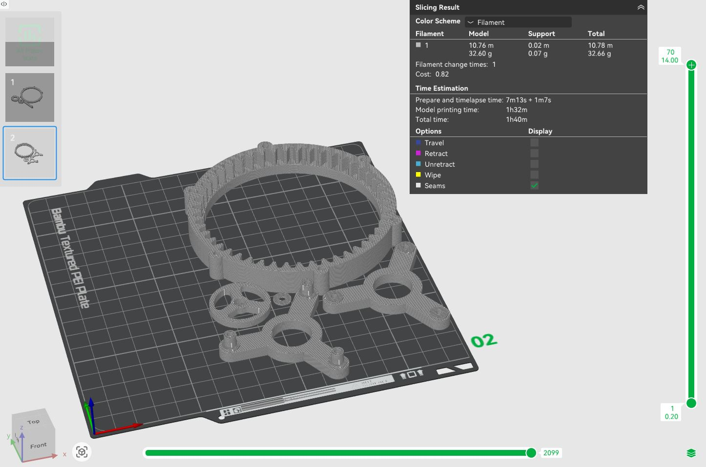
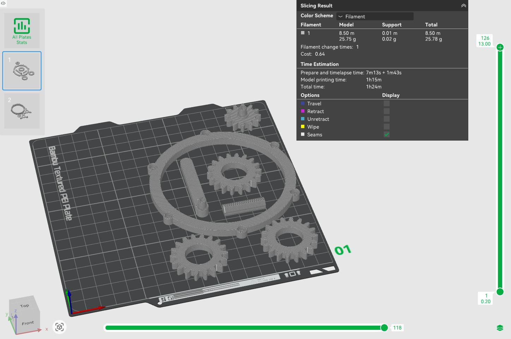
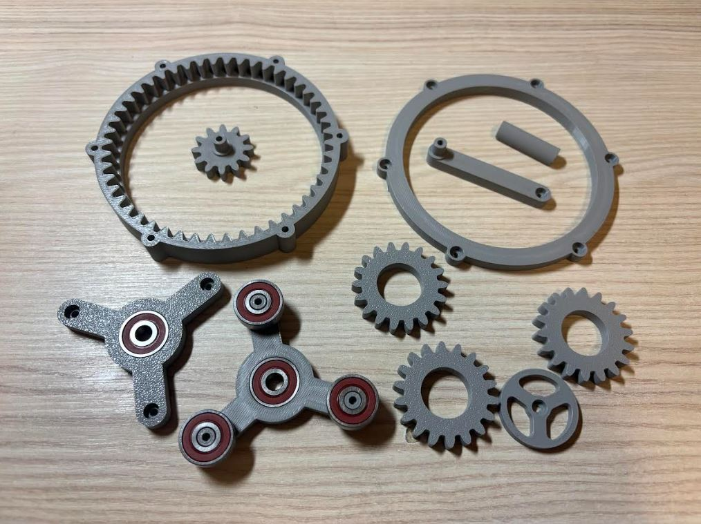
Díky správné volbě parametru Top Z distance šly podpěry odstranit velmi snadno. Při finální montáži jsem pro trvalejší a pevnější spoje použil lepidlo na plasty. Thanks to the correct choice of the Top Z distance parameter, the supports were very easy to remove. During the final assembly, I used plastic glue for more permanent and stronger joints.
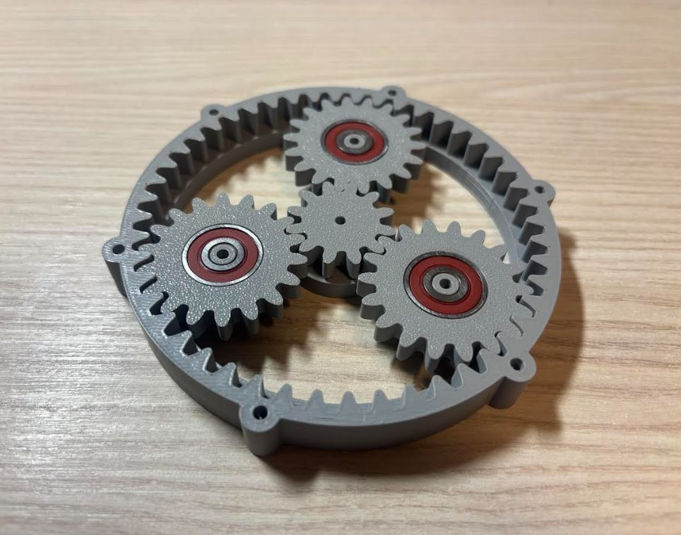
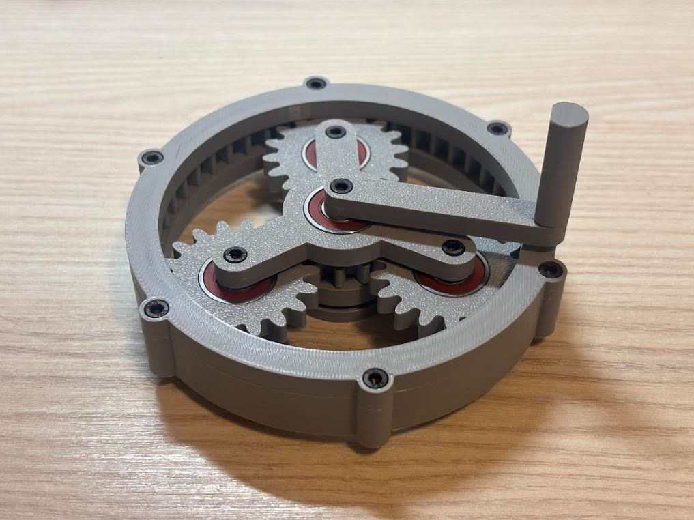
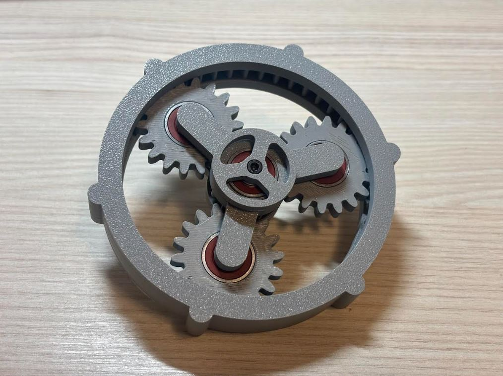
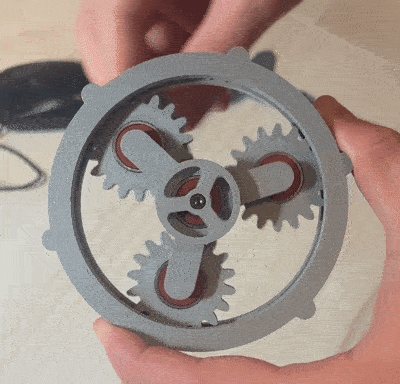